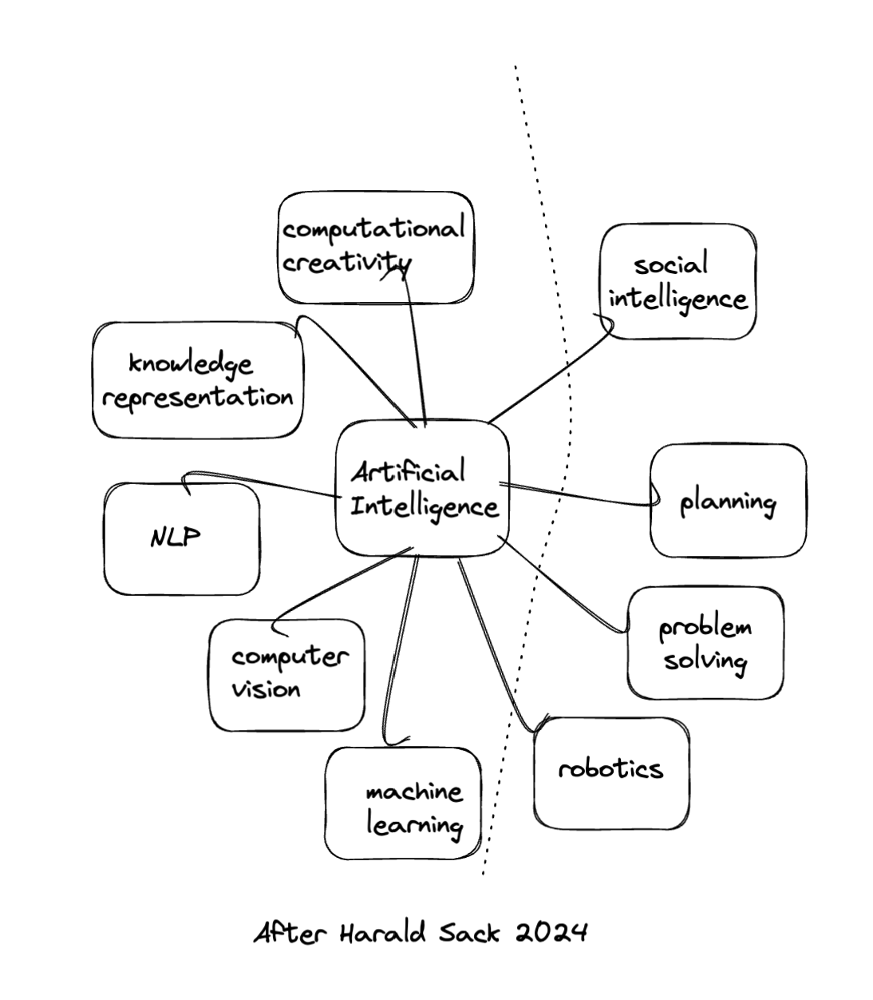
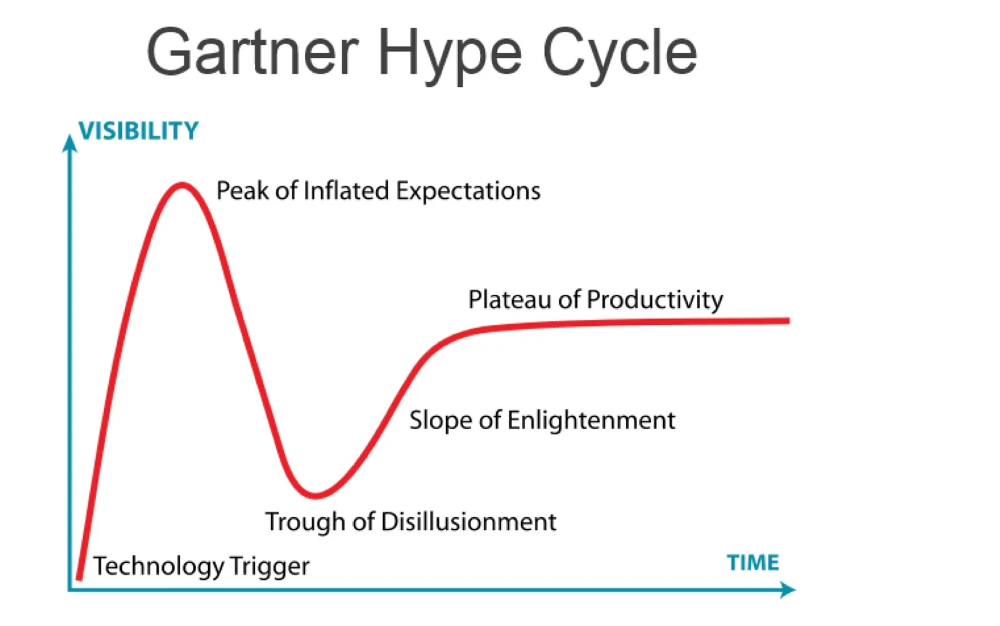
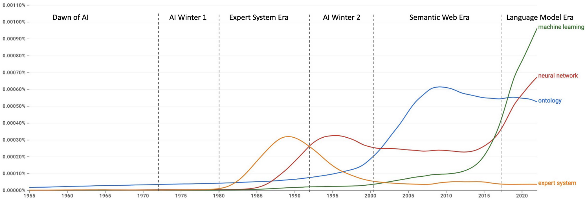

<!DOCTYPE html>
<html lang="en">
  <head>
    <meta charset="utf-8" />
    <meta name="viewport" content="width=device-width, initial-scale=1.0, maximum-scale=1.0, user-scalable=no" />

    <title></title>
    <link rel="stylesheet" href="dist/reveal.css" />
    <link rel="stylesheet" href="dist/theme/simple.css" id="theme" />
    <link rel="stylesheet" href="plugin/highlight/zenburn.css" />
	<link rel="stylesheet" href="css/layout.css" />
	<link rel="stylesheet" href="plugin/customcontrols/style.css">


    <script defer src="dist/fontawesome/all.min.js"></script>

	<script type="text/javascript">
		var forgetPop = true;
		function onPopState(event) {
			if(forgetPop){
				forgetPop = false;
			} else {
				parent.postMessage(event.target.location.href, "app://obsidian.md");
			}
        }
		window.onpopstate = onPopState;
		window.onmessage = event => {
			if(event.data == "reload"){
				window.document.location.reload();
			}
			forgetPop = true;
		}

		function fitElements(){
			const itemsToFit = document.getElementsByClassName('fitText');
			for (const item in itemsToFit) {
				if (Object.hasOwnProperty.call(itemsToFit, item)) {
					var element = itemsToFit[item];
					fitElement(element,1, 1000);
					element.classList.remove('fitText');
				}
			}
		}

		function fitElement(element, start, end){

			let size = (end + start) / 2;
			element.style.fontSize = `${size}px`;

			if(Math.abs(start - end) < 1){
				while(element.scrollHeight > element.offsetHeight){
					size--;
					element.style.fontSize = `${size}px`;
				}
				return;
			}

			if(element.scrollHeight > element.offsetHeight){
				fitElement(element, start, size);
			} else {
				fitElement(element, size, end);
			}		
		}


		document.onreadystatechange = () => {
			fitElements();
			if (document.readyState === 'complete') {
				if (window.location.href.indexOf("?export") != -1){
					parent.postMessage(event.target.location.href, "app://obsidian.md");
				}
				if (window.location.href.indexOf("print-pdf") != -1){
					let stateCheck = setInterval(() => {
						clearInterval(stateCheck);
						window.print();
					}, 250);
				}
			}
	};


        </script>
          	<style type="text/css">
p { text-align: left; }
</style>
  </head>
  <body>

    <div class="reveal">
      <div class="slides"><section  data-markdown><script type="text/template"><!-- .slide: class="drop" data-background-opacity="0.5" data-background-image="archae-mistkatonic-2021.png" -->
<div class="" style="position: absolute; left: 0px; top: 0px; height: 700px; width: 960px; min-height: 700px; display: flex; flex-direction: column; " absolute="true">

# HIST4805a Sept 13
</div></script></section><section  data-markdown><script type="text/template"><!-- .slide: class="drop" -->
<div class="" style="position: absolute; left: 0px; top: 0px; height: 700px; width: 960px; min-height: 700px; display: flex; flex-direction: column; " absolute="true">

**Freewriting**: given what we saw last week, and given what you read for this week, where are you starting from? What do you want to know? What questions have already emerged for you? (Write in chunks; interlink as appropriate)
</div></script></section><section  data-markdown><script type="text/template"><!-- .slide: class="drop" -->
<div class="" style="position: absolute; left: 0px; top: 0px; height: 700px; width: 960px; min-height: 700px; display: flex; flex-direction: column; " absolute="true">

> - Tiffany Chan, [Author Function](https://github.com/eltiffster/authorFunction), ‘Context’ section. 2017.  
> 
> - Karawynn Long. “Language is a Poor Heuristic for Intelligence”. Nine Lives blog, June 26, 2023. [link](https://karawynn.substack.com/p/language-is-a-poor-heuristic-for)  
>    
> - Allison Parish. [Language models can only write poetry](https://posts.decontextualize.com/language-models-poetry/). 2021  
>    
> - Ted Underwood. “Mapping the Latent Spaces of Culture” Startwords 3: Parrots. August 1, 2022. [original](https://startwords.cdh.princeton.edu/issues/3/mapping-latent-spaces/), [archived](https://doi.org/10.5281/ZENODO.6567481).  
>    
> - Anige Wang. “Is My Toddler a Stochastic Parrot?”. The New Yorker, November 15, 2023. [link](https://www.newyorker.com/humor/sketchbook/is-my-toddler-a-stochastic-parrot.)


<aside class="notes"><p>Underwood: &#39;The article [bender] defines <em>meaning</em> as “meaning conveyed between individuals” and “grounded in communicative intent” (&#39;616&#39;) ... Historians often use meaning to describe something more collective, because the meaning of a literary work, for example, is not circumscribed by intent. It is common for debates about the meaning of a text to depend more on connections to books published a century earlier (or later) than on reconstructing the author’s conscious plan... not all historical researchers will be scandalized when we hear that a model is merely “stitching together sequences of linguistic forms it has observed in its vast training data” (617). That’s what we often do too, and we could use help.</p>
</div></aside></script></section><section  data-markdown><script type="text/template"><!-- .slide: class="drop" -->
<div class="" style="position: absolute; left: 0px; top: 0px; height: 700px; width: 960px; min-height: 700px; display: flex; flex-direction: column; " absolute="true">

## Quick Reminder

The flavours of AI:



<aside class="notes"><p>Things on the right rather depend on combinations of things on the left. In this class, we&#39;re mostly concerned with the things on the left.</p>
</div></aside></script></section><section  data-markdown><script type="text/template"><!-- .slide: class="drop" -->
<div class="" style="position: absolute; left: 0px; top: 0px; height: 700px; width: 960px; min-height: 700px; display: flex; flex-direction: column; " absolute="true">

## The Last Decade* Has Been Wild

How do we _compute_ culture?

Why would we want to?

<aside class="notes"><p>Since I started at Carleton in 2010, the rate of change has been <em>amazing</em>. Last time I saw this much change was when I was an undergrad, in the early/mid 90s. I missed the importance of what I saw then; I&#39;m trying not to miss it now <em>but</em> I also don&#39;t want to overstate things.</p>
</div></aside></script></section><section  data-markdown><script type="text/template"><!-- .slide: class="drop" -->
<div class="" style="position: absolute; left: 0px; top: 0px; height: 700px; width: 960px; min-height: 700px; display: flex; flex-direction: column; " absolute="true">

## Ok, a quick digression beyond the last decade

Tim Berners-Lee's [original slides](https://www.w3.org/Talks/WWW94Tim/)

Notice the structure: a simple network _with_ semantics of nodes _and_ edges represented

This is not the web that we got. But this is the crucial idea: that information represented as a network can _calculate_


<aside class="notes"><p>Underwood goes on to say: &#39;The immediate value of these models is often not to mimic individual language understanding, but to represent specific cultural practices (like styles or expository templates) so they can be studied and creatively remixed. This may be disappointing for disciplines that aspire to model general intelligence. But for historians and artists, cultural specificity is not disappointing. Intelligence only starts to interest us after it mixes with time to become a biased, limited pattern of collective life. Models of culture are exactly what we need&#39;</p>
</div></aside></script></section><section  data-markdown><script type="text/template"><!-- .slide: class="drop" -->
<div class="" style="position: absolute; left: 0px; top: 0px; height: 700px; width: 960px; min-height: 700px; display: flex; flex-direction: column; " absolute="true">

> Neural language models are dangerous and fascinating because they can illuminate and transform shared patterns of behavior — in other words, cultural practices. - Ted Underwood

Node:
A network with semantic information in its nodes and in its edges, where we can track attention and influence across and through millions/billions of nodes: that's a neural network, that's a large language model
</div></script></section><section  data-markdown><script type="text/template"><!-- .slide: class="drop" -->
<div class="" style="position: absolute; left: 0px; top: 0px; height: 700px; width: 960px; min-height: 700px; display: flex; flex-direction: column; " absolute="true">

## Ok, a potted _recent-ish_ history of AI

- &shy;<!-- .element: class="fragment" data-fragment-index="1" -->this week and next week we're going to work our way backwards to the 1940s
- &shy;<!-- .element: class="fragment" data-fragment-index="2" -->a lot of concepts to become familiar with
- &shy;<!-- .element: class="fragment" data-fragment-index="3" -->some I mentioned last week
</div></script></section><section  data-markdown><script type="text/template"><!-- .slide: class="drop" -->
<div class="" style="position: absolute; left: 0px; top: 0px; height: 700px; width: 960px; min-height: 700px; display: flex; flex-direction: column; " absolute="true">


(By Bruce Blaus)

<aside class="notes"><p>Remember the neuron, remember the simplified model of how structure emerges when neurons fire together. Regardless of the nuance or complexity of actual biology, this is what the particular flavour of AI that we&#39;re looking at imagines in the deep background</p>
</div></aside></script></section><section  data-markdown><script type="text/template"><!-- .slide: class="drop" -->
<div class="" style="position: absolute; left: 0px; top: 0px; height: 700px; width: 960px; min-height: 700px; display: flex; flex-direction: column; " absolute="true">

**Symbolic AI**: the idea that meaning can be represented by symbols, and that symbols can be combined into mathematical expressions, and new expressions can therefore be computed

**Subsymbolic AI**: meaning emerges from connections in artificial neural networks, therefore new information can be learned from statistical patterns in large amounts of data

...we're in an era where subsymbolic AI is currently dominant...
</div></script></section><section  data-markdown><script type="text/template"><!-- .slide: class="drop" -->
<div class="" style="position: absolute; left: 0px; top: 0px; height: 700px; width: 960px; min-height: 700px; display: flex; flex-direction: column; " absolute="true">

## Logic to Learning

“**It is** raining therefore I will carry an umbrella”. True: Umbrella Carried

“It **might** rain today, should I take an umbrella?”. p > 50%: Umbrella Carried

How do you write rules for: “Which paintings in our collection have umbrellas in them?”

(following [this](https://carpentries-incubator.github.io/machine-learning-librarians-archivists/02-AI-in-a-Nutshell/index.html))

(now compare with the kinds of questions historians ask about the past...)
</div></script></section><section  data-markdown><script type="text/template"><!-- .slide: class="drop" -->
<div class="" style="position: absolute; left: 0px; top: 0px; height: 700px; width: 960px; min-height: 700px; display: flex; flex-direction: column; " absolute="true">

## Machine Learning

- if we can't describe the rules, maybe a machine can find 'em.
- Machine Learning and 'AI' are sometimes conflated terms.
</div></script></section><section  data-markdown><script type="text/template"><!-- .slide: class="drop" -->
<div class="" style="position: absolute; left: 0px; top: 0px; height: 700px; width: 960px; min-height: 700px; display: flex; flex-direction: column; " absolute="true">

## Types of Machine Learning

- Supervised - the system is given data that is categorised and labeled and asked to learn by example to make predictions on totally new data it has never seen before
- Unsupervised - given data that has not been categorised and labeled and asked to put it into groups (find patterns) without guidance
- Semi-supervised - a combination of supervised and unsupervised
- Reinforcement - learns about the world by interacting with its environment
</div></script></section><section  data-markdown><script type="text/template"><!-- .slide: class="drop" -->
<div class="" style="position: absolute; left: 0px; top: 0px; height: 700px; width: 960px; min-height: 700px; display: flex; flex-direction: column; " absolute="true">

## Which of these might be good uses for machine learning?

- a) Counting the number of people in a museum using information from entry and exit barriers.
- b) A search system that looks for images similar to a user submitted sketch
- c) A system that recommends library books based on what other users have ordered
- d) A queueing system that spreads people evenly between 5 ticket booths.
- e) A program which extracts names from documents by finding all capitalised words and checking them against a list of known names.
- f) A system which turns digitised handwritten documents into searchable text
- g) A robot which cleans the vases in a museum without bumping into them or breaking them
</div></script></section><section  data-markdown><script type="text/template"><!-- .slide: class="drop" -->
<div class="" style="position: absolute; left: 0px; top: 0px; height: 700px; width: 960px; min-height: 700px; display: flex; flex-direction: column; " absolute="true">

Ok - so we have a sense of *when* it might make sense to use a machine learning system

We have a sense of how such systems might be trained.

But what do the _systems_ look like?
</div></script></section><section  data-markdown><script type="text/template"><!-- .slide: class="drop" -->
<div class="" style="position: absolute; left: 0px; top: 0px; height: 700px; width: 960px; min-height: 700px; display: flex; flex-direction: column; " absolute="true">

## 1990s

(again, a digression)

1996 - Long Short Term Memory Recurrent Neural Networks invented (Sepp Hochreiter, Juergen Schmidhuber) - enables processing of sequences of data rather than individual data points

1999 - Nvidia: releases the Geforce 256 - enables parallel processing for the masses
</div></script></section><section  data-markdown><script type="text/template"><!-- .slide: class="drop" -->
<div class="" style="position: absolute; left: 0px; top: 0px; height: 700px; width: 960px; min-height: 700px; display: flex; flex-direction: column; " absolute="true">

## 2013

- word2vec - a tool for learning how to represent words and their semantics as distributed representations (vectors) in continuous space is released
</div></script></section><section  data-markdown><script type="text/template"><!-- .slide: class="drop" -->
<div class="" style="position: absolute; left: 0px; top: 0px; height: 700px; width: 960px; min-height: 700px; display: flex; flex-direction: column; " absolute="true">

## 2014

- '[Attention](https://arxiv.org/pdf/1409.0473)' mechanism is developed;

- 'Attention' is a mathematical approach that lets a neural network model of language to focus selectively on different parts of the input
- Emerges out of research into the problem of machine translation (the 'alignment' problem)
</div></script></section><section  data-markdown><script type="text/template"><!-- .slide: class="drop" -->
<div class="" style="position: absolute; left: 0px; top: 0px; height: 700px; width: 960px; min-height: 700px; display: flex; flex-direction: column; " absolute="true">

## 2017

 - famous paper ['Attention is All You Need'](https://arxiv.org/pdf/1706.03762) uses the 'attention' function to create the 'transformer' function (the 'T' in GPT)
- Transformer model uses this in a stacked architecture that allows it to capture the complex _contexts_ of words or phrases, which fires up even more work in NLP and machine translation
- Around about now, people started saying, hey, google translate's getting better, eh?
</div></script></section><section  data-markdown><script type="text/template"><!-- .slide: class="drop" -->
<div class="" style="position: absolute; left: 0px; top: 0px; height: 700px; width: 960px; min-height: 700px; display: flex; flex-direction: column; " absolute="true">

## 2018

- Generative Pre-trained Transformers - GPT - comes out - OpenAI
- Bidirectional Encoder Representations from Transformers - BERT -  comes out - Google

A Pre-Cambrian Explosion of Models. 

Remember, we're just talking language, for now. And, *these are just the ones that end up being dominant; other approaches were also being explored and developed at the time and for certain kinds of tasks, may still be the best approach!*

<aside class="notes"><p>I&#39;m not even talking about vision models and how those things worked; eventually, all these things converge into the GPT-type architectures, since it turns out you can express sound, image, and text all within the same model!</p>
</div></aside></script></section><section  data-markdown><script type="text/template"><!-- .slide: class="drop" -->
<div class="" style="position: absolute; left: 0px; top: 0px; height: 700px; width: 960px; min-height: 700px; display: flex; flex-direction: column; " absolute="true">

## 2019
- GPT-2 Comes out, from Open AI.

<aside class="notes"><p>I loved working with GPT-2, because it was easy for me, with the resources I had, to engage in <em>transfer learning</em> by smearing my own texts of interest across the last layers of the model - see <a href="https://programminghistorian.org/en/lessons/interrogating-national-narrative-gpt">Brousseau</a>
There is <em>value</em> in not chasing after the latest models, but in seeing how these smaller ones can be pushed and prodded and used, btw</p>
</div></aside></script></section><section  data-markdown><script type="text/template"><!-- .slide: class="drop" -->
<div class="" style="position: absolute; left: 0px; top: 0px; height: 700px; width: 960px; min-height: 700px; display: flex; flex-direction: column; " absolute="true">

## 2020

- **One shot learning**
- GPT-3 released, from OpenAI, uses 45 _terabytes_ of information crawled/taken/stolen from the web. 
- OpenAI begins to experiment with other kinds of layers, trained in various ways, stacked on top of the 'foundation' model to enhance the kinds of possibilities hinted at by one-shot learning, few-shot learning etc
- Meanwhile, 'Diffusion' models for imagery etc are being learned

<aside class="notes"><p>one-shot: People starting to learn that <em>generating</em> the next sequence of text can be guided such that if you give it an example of your desired output, you constrain the model to that space of probabilities. few-shot: three or four examples. No-shot: it has all the examples already</p>
</div></aside></script></section><section  data-markdown><script type="text/template"><!-- .slide: class="drop" -->
<div class="" style="position: absolute; left: 0px; top: 0px; height: 700px; width: 960px; min-height: 700px; display: flex; flex-direction: column; " absolute="true">

## Diffusion model?

- &shy;<!-- .element: class="fragment" data-fragment-index="1" -->meanwhile, over in image work: GANs vs Diffusion
- &shy;<!-- .element: class="fragment" data-fragment-index="2" -->GAN: two networks - a generator, and a discriminator (forger/detective analogy)
- &shy;<!-- .element: class="fragment" data-fragment-index="3" -->Diffusion - decay an image into noise; learn the patterns for how the images become noise; simulate how a desired image becomes noise _then reverse the process_
- &shy;<!-- .element: class="fragment" data-fragment-index="4" -->Diffusion models find the path from the noise to the preferred image 
- See [Salvaggio, 2022](https://cyberneticforests.substack.com/p/ghosts-of-diffusion)
</div></script></section><section  data-markdown><script type="text/template"><!-- .slide: class="drop" -->
<div class="" style="position: absolute; left: 0px; top: 0px; height: 700px; width: 960px; min-height: 700px; display: flex; flex-direction: column; " absolute="true">

We used GANs, for instance, in the [Bone Trade Project](https://intarch.ac.uk/journal/issue52/5/index.html) (here trained on 1500 images):


</div></script></section><section  data-markdown><script type="text/template"><!-- .slide: class="drop" -->
<div class="" style="position: absolute; left: 0px; top: 0px; height: 700px; width: 960px; min-height: 700px; display: flex; flex-direction: column; " absolute="true">

(here trained on 6700 images)


</div></script></section><section  data-markdown><script type="text/template"><!-- .slide: class="drop" -->
<div class="" style="position: absolute; left: 0px; top: 0px; height: 700px; width: 960px; min-height: 700px; display: flex; flex-direction: column; " absolute="true">

## 2021

- GPT3, DALL-E and other models learn to cross the streams, and find the equivalencies between the representation of language and the representations of images-as-noise
</div></script></section><section  data-markdown><script type="text/template"><!-- .slide: class="drop" -->
<div class="" style="position: absolute; left: 0px; top: 0px; height: 700px; width: 960px; min-height: 700px; display: flex; flex-direction: column; " absolute="true">

DALL-E in 2021 vs 2024

'archaeology faculty outside miskatonic university'

<div align="left">
 
<div align="right">

</div></div>

</div></script></section><section  data-markdown><script type="text/template"><!-- .slide: class="drop" -->
<div class="" style="position: absolute; left: 0px; top: 0px; height: 700px; width: 960px; min-height: 700px; display: flex; flex-direction: column; " absolute="true">

## 2022 ALL HELL BREAKS LOOSE

- OpenAI continues to add 'layers' of various training processes on top of the foundation models - take a model, generate examples, have humans mark the results as good/bad, use this reinforcement learning to guide what the user eventually sees
- GPT3 married to a chat interface: ChatGPT
</div></script></section><section  data-markdown><script type="text/template"><!-- .slide: class="drop" -->
<div class="" style="position: absolute; left: 0px; top: 0px; height: 700px; width: 960px; min-height: 700px; display: flex; flex-direction: column; " absolute="true">

## BUT



<aside class="notes"><ul>
<li>But since 2022, nothing &#39;new&#39; in terms of groundbreaking advances has emerged. Everything since has been hype, expansion of training corpuses, and the deployment of what has been called &#39;a lossy database&#39; or a &#39;lossy version of the internet&#39; into every. single. thing.</li>
<li>Hype cycle, crash in the offing?</div></li>
</ul>
</aside></script></section><section  data-markdown><script type="text/template"><!-- .slide: class="drop" -->
<div class="" style="position: absolute; left: 0px; top: 0px; height: 700px; width: 960px; min-height: 700px; display: flex; flex-direction: column; " absolute="true">

## Eras of AI



(Harald Slack, google n-grams)
</div></script></section><section  data-markdown><script type="text/template"><!-- .slide: class="drop" -->
<div class="" style="position: absolute; left: 0px; top: 0px; height: 700px; width: 960px; min-height: 700px; display: flex; flex-direction: column; " absolute="true">

- Ok, let's get set up with Github accounts
- Fork the [digital garden](https://4805-garden.netlify.app/notes/)
- Upload your first entries in your lab notebooks
- Let's set who-will-lead-which-sessions for the next few weeks.
</div></script></section></div>
    </div>

    <script src="dist/reveal.js"></script>

    <script src="plugin/markdown/markdown.js"></script>
    <script src="plugin/highlight/highlight.js"></script>
    <script src="plugin/zoom/zoom.js"></script>
    <script src="plugin/notes/notes.js"></script>
    <script src="plugin/math/math.js"></script>
	<script src="plugin/mermaid/mermaid.js"></script>
	<script src="plugin/chart/chart.min.js"></script>
	<script src="plugin/chart/plugin.js"></script>
	<script src="plugin/menu/menu.js"></script>
	<script src="plugin/customcontrols/plugin.js"></script>

    <script>
      function extend() {
        var target = {};
        for (var i = 0; i < arguments.length; i++) {
          var source = arguments[i];
          for (var key in source) {
            if (source.hasOwnProperty(key)) {
              target[key] = source[key];
            }
          }
        }
        return target;
      }

	  function isLight(color) {
		let hex = color.replace('#', '');

		// convert #fff => #ffffff
		if(hex.length == 3){
			hex = `${hex[0]}${hex[0]}${hex[1]}${hex[1]}${hex[2]}${hex[2]}`;
		}

		const c_r = parseInt(hex.substr(0, 2), 16);
		const c_g = parseInt(hex.substr(2, 2), 16);
		const c_b = parseInt(hex.substr(4, 2), 16);
		const brightness = ((c_r * 299) + (c_g * 587) + (c_b * 114)) / 1000;
		return brightness > 155;
	}

	var bgColor = getComputedStyle(document.documentElement).getPropertyValue('--r-background-color').trim();
	var isLight = isLight(bgColor);

	if(isLight){
		document.body.classList.add('has-light-background');
	} else {
		document.body.classList.add('has-dark-background');
	}

      // default options to init reveal.js
      var defaultOptions = {
        controls: true,
        progress: true,
        history: true,
        center: true,
        transition: 'default', // none/fade/slide/convex/concave/zoom
        plugins: [
          RevealMarkdown,
          RevealHighlight,
          RevealZoom,
          RevealNotes,
          RevealMath.MathJax3,
		  RevealMermaid,
		  RevealChart,
		  RevealCustomControls,
		  RevealMenu,
        ],


    	allottedTime: 120 * 1000,

		mathjax3: {
			mathjax: 'plugin/math/mathjax/tex-mml-chtml.js',
		},
		markdown: {
		  gfm: true,
		  mangle: true,
		  pedantic: false,
		  smartLists: false,
		  smartypants: false,
		},

		mermaid: {
			theme: isLight ? 'default' : 'dark',
		},

		customcontrols: {
			controls: [
				{id: 'toggle-overview',
				title: 'Toggle overview (O)',
				icon: '<i class="fa fa-th"></i>',
				action: 'Reveal.toggleOverview();'
				},
			]
		},
		menu: {
			loadIcons: false
		}
      };

      // options from URL query string
      var queryOptions = Reveal().getQueryHash() || {};

      var options = extend(defaultOptions, {"width":960,"height":700,"margin":0.04,"controls":true,"progress":true,"slideNumber":true,"transition":"fade","transitionSpeed":"default"}, queryOptions);
    </script>

    <script>
      Reveal.initialize(options);
    </script>
  </body>

  <!-- created with Advanced Slides -->
</html>
